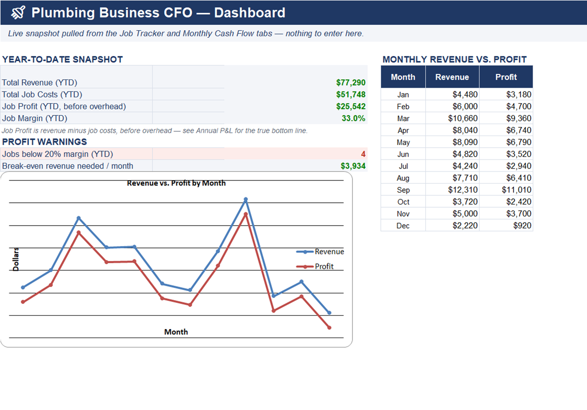
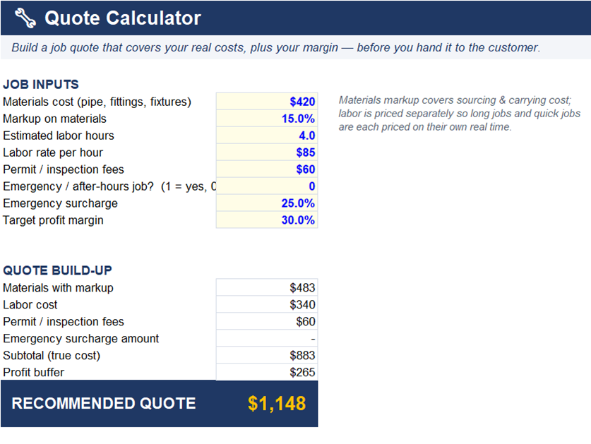
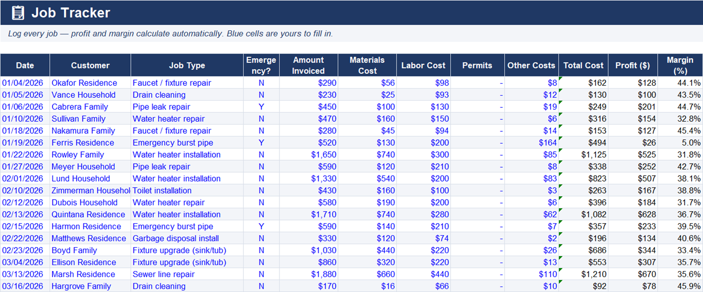

Find out in minutes. Price jobs with confidence, uncover your true profit, and know what to set aside for taxes—with 5 simple calculators and the Plumbing Business CFO.
Build a job quote that actually covers your costs and pays you.
🔒 Runs entirely in your browser — nothing you enter is sent or stored.
What you add on top of materials cost to cover sourcing & handling.
Extra buffer on top of cost + labor for profit and the unexpected.
About This Quote / Bid Calculator
A bid that only covers pipe, fittings, and labor is really just a break-even price — it pays your supplier and your time but not you. This calculator adds a profit buffer on top of your true costs, so every quote you hand a customer already has your margin built in before you ever touch a wrench.
Materials markup and labor are priced separately on purpose. Markup covers the drive to the supply house, sourcing, and the risk of carrying inventory; labor is priced on the hours the job will actually take. Bundling them into one number tends to underprice long rough-in jobs and overprice quick fixture swaps.
Permit and inspection fees are easy to forget when you're bidding fast between service calls, but they're real cash out of pocket before the job even starts. Emergency and after-hours calls carry their own risk — rushed parts runs, working alone at odd hours — which is why this calculator adds a surcharge automatically when you flag one.
A common question plumbers search for is “what should I charge for a job?” The honest answer: your real materials and labor cost, plus permits, plus enough margin to cover callbacks, warranty comebacks, and the weeks when work is slow. A 30% buffer is a starting point, not a rule.
See what a finished job actually made you, after every cost.
🔒 Runs entirely in your browser — nothing you enter is sent or stored.
What you paid out in wages for this job, not what you billed.
Permits, disposal fees, equipment rental, warranty/rework, etc.
About This Job Profit Calculator
Getting the job done isn't the same as getting paid for your time. This calculator checks what a finished job actually returned after materials, labor, and the costs that don't make it onto the invoice.
“Other job costs” is where profit quietly disappears — disposal fees, a rented drain camera, a warranty callback, a permit re-inspection. Plumbers who only track materials and labor consistently overestimate their real margin.
Margin percentage matters more than the dollar figure when you're comparing job types. A $400 profit on a $3,000 repipe (13% margin) is a very different result from $400 on a $600 drain cleaning call (67% margin) — one of those is a much better use of your day.
If a job comes back under margin, compare it against the original quote from the calculator above — the gap usually points to either an underbid scope or a job that ran into unexpected complexity.
Work out the minimum you need to charge per billable hour.
🔒 Runs entirely in your browser — nothing you enter is sent or stored.
Monthly overhead
Camera, jetter, snake, and other gear.
Billable time
Hours actually billed to customers, not total hours worked.
About This Hourly Rate Calculator
Charging what the plumber down the road charges tells you nothing about whether your rate covers your truck payment, insurance, and licensing. This calculator works backward from your real overhead and desired profit to your true minimum rate.
Billable hours — not hours the truck is running — is the number that matters here. A plumber on the road 40 hours a week but only billing 26 of them (the rest lost to driving, estimates, and parts runs) needs a real rate higher than a naive “overhead ÷ 40 hours” calculation would suggest.
Camera equipment, jetters, and snakes wear out and need replacing — spreading that cost across your overhead here keeps a big tool purchase from blindsiding your margin the month it happens.
This number is your floor, not your target. Once you know the minimum, your specialty, reputation, and local market determine how far above it you actually charge.
Estimate self-employment tax and income tax separately, not just a flat guess.
🔒 Runs entirely in your browser — nothing you enter is sent or stored.
Check irs.gov each year—this rate changes annually.
About This Tax Reserve Calculator
Self-employment tax catches a lot of plumbing contractors off guard because it's stacked on top of regular income tax — you're paying both the employee and employer share of Social Security and Medicare. This calculator splits the two out so you can see exactly where the money is going.
Vehicle mileage is one of the largest deductions available to a mobile trade like plumbing, which is why it gets its own line here instead of being buried in “other expenses.” Track it consistently, not just at tax time, since the IRS standard rate changes every year.
The reason to reserve by pay period rather than waiting until tax time is simple: the money already isn't yours the day you earn it. Moving your estimated reserve to a separate account the same day you deposit revenue keeps a good month from turning into an ugly April.
This is a planning estimate, not a substitute for a tax professional who knows your entity type, state, and deductions.
See how many months your savings would cover you with no income.
🔒 Runs entirely in your browser — nothing you enter is sent or stored.
The full amount you have saved right now — not a monthly figure.
About This Business Runway Calculator
Runway answers a simple but uncomfortable question: if the phone stopped ringing tomorrow, how long could you keep the doors open and pay yourself? Most plumbing business owners have never actually run this number.
This calculator intentionally uses your personal savings and personal expenses, not the business's bank account — the goal is to know how long you could hold on personally while you rebuild the schedule, not how long the business entity survives on paper.
Contractors with seasonal swings (burst-pipe season in winter, slower stretches in between) get the most value from running this right before their historically slowest month, not right after a strong one.
A short runway isn't a reason to panic; it's a reason to build a small buffer intentionally, the same way you'd stock a slow-moving part before you actually need it.
A single spreadsheet to log every job—materials, labor, and profit per job, with a running snapshot. No email required, just a straight download.
🔒 Runs entirely in your spreadsheet app — nothing is sent or stored anywhere.
Download the Free Tracker →🚿 PLUMBING BUSINESS CFO
The free tools above answer one question at a time. The full workbook gives you ongoing control—every job, every month, in one place.



Answer one question, once, then you're back to guessing next week.
Every job, every dollar, tracked automatically—so the answer is always current.
Includes:
No. The tax reserve calculator combines a standard self-employment tax estimate (15.3%) with the federal bracket you select, for planning purposes only. It doesn't account for deductions, credits, state tax, or entity type. Always confirm your actual tax obligations with a licensed tax professional.
The tax reserve calculator assumes sole proprietor or single-member LLC self-employment tax rules. If you're taxed as an S-corp or have employees on payroll, your actual tax picture is different—talk to your accountant.
Yes — these calculators run entirely in your browser. Nothing you type here is sent anywhere or stored.
More Free Tools
Free calculators for other trades from Mundusflow.